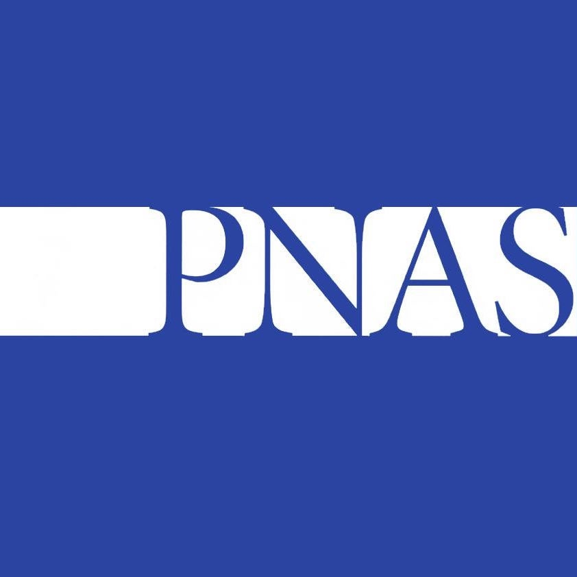
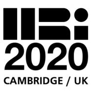
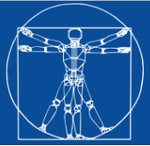

I am a sixth year graduate student at Yale University pursuing a Ph.D. in Computer Science. I work with Brian Scassellati in the Social Robotics Lab. I am interested in human-robot interaction, artificial intelligence, and robot interactions with human-robot teams.
My research focuses on developing robots that improve the performance of human-robot teams by shaping team dynamics to promote inclusion, trust, and cohesion. Human social behavior in groups is richly interconnected and highly nuanced, presenting computational challenges for sensing group-level dynamics from individual behavior. I build robots that not only perceive these dynamics, but also positively influence the behavior of group members through social cues and verbal interaction.
I am currently looking and applying for tenure-track assistant professor positions. Here are links to generic versions of my research statement, teaching statement, and CV.
Featured Work
My work investigating how vulnerablility shapes human-to-human social dynamics in human-robot teams has demonstrated that the vulnerable utterances of a robot increases the likelihood that human team members express trust-related behavior towards one another (HRI 2018) and also positively shapes the conversational dynamics of the human members of the human-robot team (PNAS 2020). This work is among the first to show that in human-robot teams the actions of a robot can influence how humans in the group interact with each other. Check out the following video for more details this work.
Recent News

3/9/20
My paper titled Vulnerable Robots Positively Shape Human Conversational Dynamics in a Human-Robot Team was accepted to the Proceedings of the National Academy of Sciences (PNAS).

11/30/19
My paper titled "Strategies for the Inclusion of Human Members within Human-Robot Teams" was accepted to the 15th Annual ACM/IEEE International Conference on Human Robot Interaction in Cambridge, UK.

10/29/19
I participated in the 2019 Rising Stars in EECS Workshop hosted at the Univiersity of Illinois Urbana Champaign from October 29 to November 1, 2019.
10/06/19
I participated in the 2019 Dagstuhl Seminar on "Social Agents for Teamwork and Group Interactions from October 6 to 11, 2019.

06/21/19
I participated in the RSS Pioneers 2019 Workshop held in tandom with the Robotics: Sience and Systems (RSS) Conference June 21-26 in Freiburg, Germany.
04/01/19
My research on examining people's responses and reactions to robots that break their trust and try to repair the trust that was broken was featured in a New Scientist article titled Robot discovers that lying about a betrayal helps to rebuild trust.
03/12/19
I presented my paper examining the response of human participants to a robot's trust violation and subsequent repair at THe 14th Annual ACM/IEEE International Conference on Human Robot Interaction in Daegu, South Korea.
02/01/19
My colleague Aditi Ramachandran and I presented our paper describing our design of the Assistive Tutor POMDP (AT-POMDP) and evaluation with 5th grade stduents at the The Thirty-Third AAAI Conference on Artificial Intelligence (AAAI-19) in Honolulu, HI, USA.